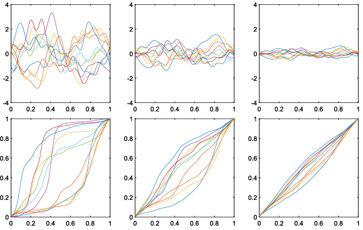
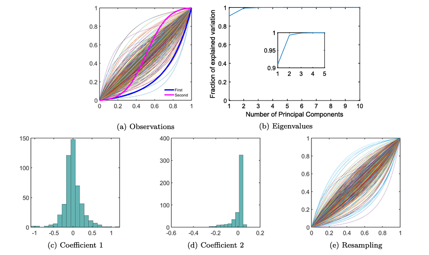
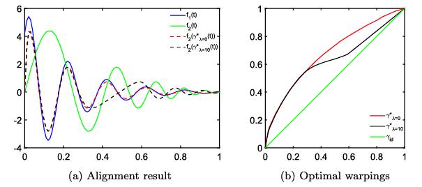
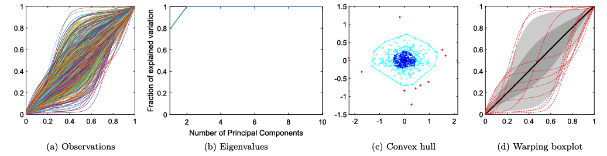
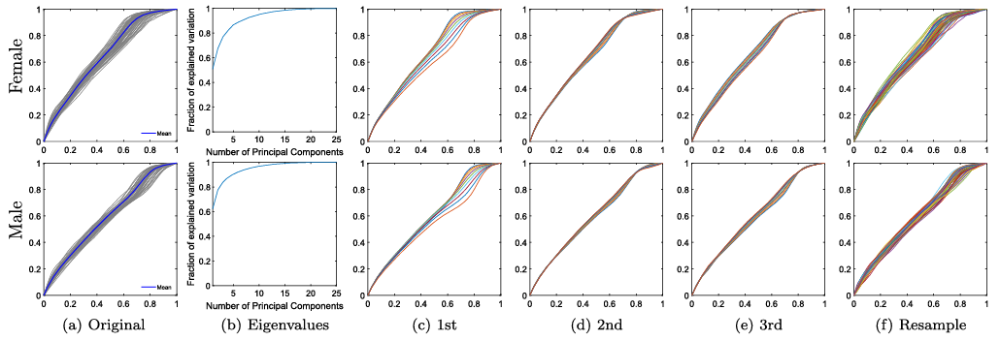
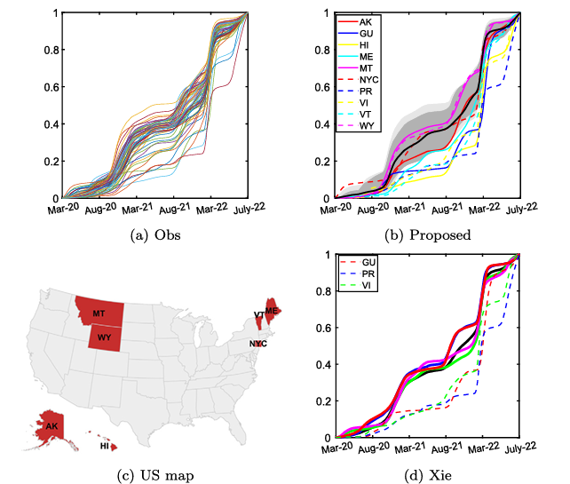

This project highlights my role as a statistician and methodological researcher. I developed a new statistical framework that converts nonlinear time-warping functions into a linear Hilbert-space representation, enabling stochastic-process modeling, penalized function registration, functional boxplots, and outlier detection for phase variability.
As the first author, I led the statistical methodology, mathematical formulation, simulation design, optimization framework, and applied data analysis. This work reflects my core expertise in functional data analysis, stochastic processes, Hilbert-space methods, statistical computing, and interpretable methodological development.
Developed a linear representation for nonlinear warping functions through an isometric transformation into a Hilbert-space structure.
Designed simulation, resampling, penalized registration, gradient-based optimization, and functional boxplot procedures.
In functional data analysis, time-warping functions are used to represent phase variability: differences in timing, alignment, or temporal progression across observed curves. However, warping functions are nonlinear under the conventional L² metric, making direct statistical modeling difficult.
This paper addresses that challenge by constructing a principled linear representation for time-warping functions. The proposed framework enables stochastic-process modeling, simulation, resampling, penalized function registration, and functional outlier detection.
The proposed framework transforms nonlinear time-warping functions into a linear Hilbert-space representation, making phase variability easier to model, simulate, analyze, and map back to valid warping functions.
Time-warping functions represent phase variability in functional data, capturing differences in timing or temporal progression across curves.
The derivative of each warping function is treated as a probability density function on the unit interval, which creates a bridge to a more convenient mathematical representation.
The centered log-ratio transformation maps the density representation into a linear L² subspace, overcoming the nonlinear difficulty of the original warping space.
In the transformed space, the functions can be represented using orthonormal basis functions, which makes modeling and statistical analysis much more natural.
Gaussian and non-Gaussian stochastic processes can then be used to generate, model, and resample flexible warping functions in this linear space.
Finally, the transformed functions are mapped back to the original warping-function space, yielding valid and interpretable time-warping functions.
The framework is demonstrated through simulation studies, functional PCA modeling, penalized registration, functional boxplots, and real temporal-growth data analysis. The figures below help show how the statistical representation is used in practice.

The proposed representation generates flexible warping functions using Gaussian, Laplacian, uniform, and other stochastic coefficient distributions.

Observed warping functions are transformed into the linear space, modeled using functional PCA, and resampled to reproduce realistic phase variability.

The representation provides a new penalty term for function alignment, allowing nonuniform and correlated constraints across the time domain.

Warping functions can be summarized through a boxplot-style visualization that captures centrality, variability, and outlying phase patterns.

The method is applied to Berkeley growth curves to model temporal growth-pattern variability and demonstrate practical resampling performance.

The framework identifies states with outlying COVID-19 temporal growth patterns, showing its usefulness for real-world functional data analysis.
The proposed representation provides a unified statistical framework for modeling, generating, aligning, summarizing, and detecting outliers in time-warping functions. It transforms a difficult nonlinear object into a structure where conventional statistical tools such as stochastic processes, fPCA, regression, ANOVA, and functional boxplots can be naturally applied.
Established an isometric isomorphism between a bounded warping-function space and a linear L² subspace.
Enabled stochastic-process-based generation of flexible warping functions.
Introduced penalties capable of modeling nonuniform and correlated time-domain constraints.
Developed a warping-function boxplot for identifying abnormal phase patterns.
Demonstrated the approach on real functional datasets, including growth curves and COVID-19 temporal patterns.
Programming scripts are available in a public repository accompanying the paper.
Phase variability, time warping, function registration, functional boxplots, and functional PCA.
Gaussian and non-Gaussian process representations, covariance kernels, basis expansions, and generative modeling.
Inner-product spaces, L² subspaces, orthonormal systems, and isometric mappings.
Penalized loss functions, gradient-based algorithms, constrained optimization, and numerical implementation.
Simulation studies, resampling, real-data analysis, reproducible code, and visualization.
Growth-curve analysis, COVID-19 trajectory analysis, outlier detection, and interpretable statistical methodology.
Programming scripts for the paper are available at:
@article{ma2024stochastic,
title = {A stochastic process representation for time warping functions},
author = {Ma, Yijia and Zhou, Xinyu and Wu, Wei},
journal = {Computational Statistics and Data Analysis},
volume = {194},
pages = {107941},
year = {2024},
publisher = {Elsevier}
}